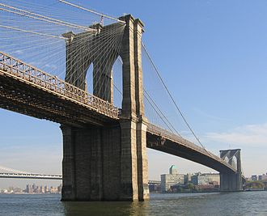
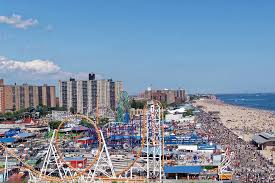
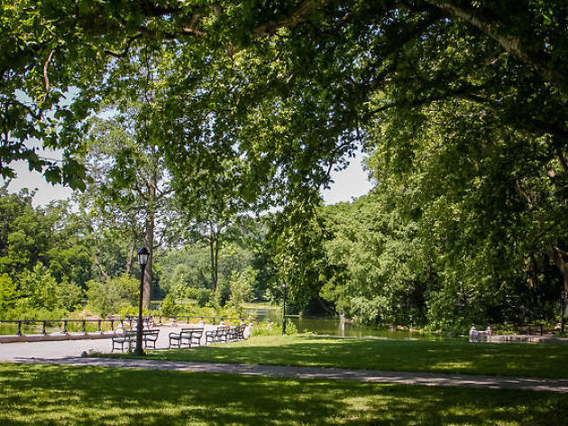
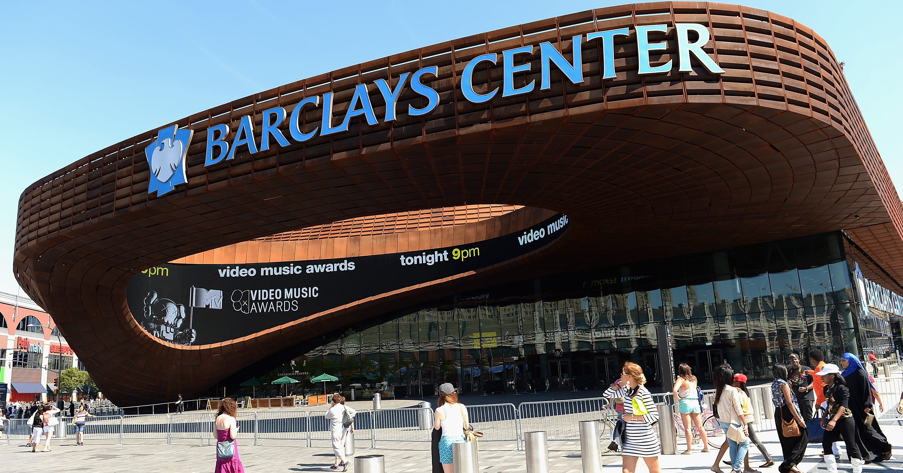
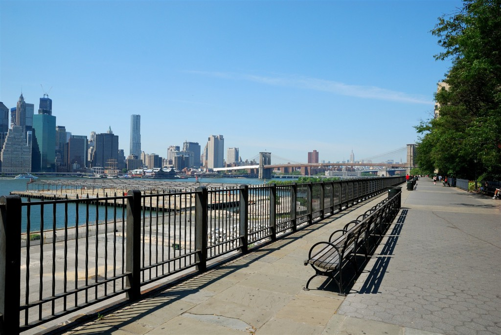

| Photo | Description |
|---|---|
|  | Brooklyn Bridge: The Brooklyn Bridge, with its Gothic-shaped arches and suspension cables, is one of the city's most recognizable landmarks and has inspired generations of poets, songwriters, and painters. This historic bridge, spanning the East River from Manhattan to Brooklyn, was completed in 1883 and was the world's first steel suspension bridge. You can see it from many of the ferries, or the east side of Manhattan, but the best way to experience this icon is to take an hour and walk across the Brooklyn Bridge. |
|  | Coney Island: Named after the original park, which burnt down in 1944, Luna Park is an amusement park based on Coney Island and one of the best things to do in Brooklyn. Once dubbed ‘The World’s Largest Playground’, the original park had three huge fairgrounds that provided hair-raising rides, a model off which the recently opened park has built itself on. Luna Park is home to nineteen new attractions and games, including the historic Cyclone Roller Coaster, and the famous Coney Island ‘Funny Face’ Tickler Ride. |
|  | Prospect Park:Designed by Frederick Law Olmsted and Calvert Vaux—the visionary designers behind Central Park—Prospect Park offers Brooklynites a chance to get back in touch with nature. Soak up the sunshine in the sprawling Long Meadow, take a guided hike to forage for wild herbs or explore the Ravine, one of the few remaining indigenous forests in the city. |
|  | Barclays Center: Major-league sports at the corner of Atlantic and Flatbush Avenues have been a long time coming—since the 1950s, in fact—but the 18,200-seat Barclays Center is now a reality. Home to the Brooklyn Nets and the New York Islanders, the arena also features the more intimate 7,700-seat Tidal theater, the Shops at Barclays Center (including the Nets Lifestyle Shop by Adidas), and more than 50 local food vendors. In addition to the Nets and Islanders, the Barclays Center hosts college and prep basketball, boxing, circuses, family shows, and concerts ranging from Arcade Fire to Jay Z to Yanni. |
|  | Brooklyn Heights: In order to mollify the residents of Brooklyn Heights, city planner Robert Moses built this park atop the Brooklyn-Queens Expressway to muffle the street noise when it opened in 1950. Today, you might forget that traffic is moving along beneath you while strolling the esplanade. The picture-perfect views of Manhattan, the Brooklyn Bridge and the Statue of Liberty are admittedly distracting. |